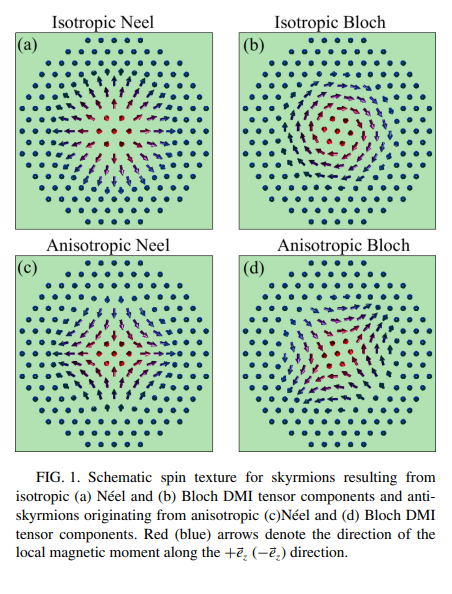
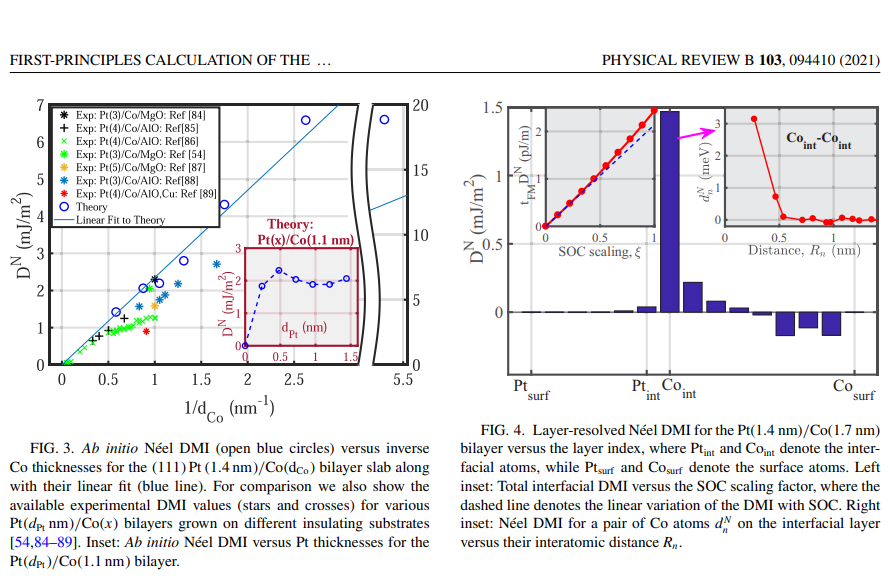
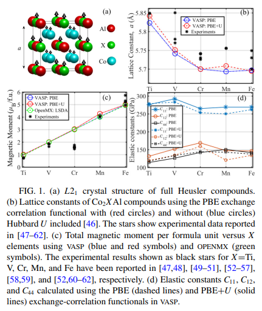
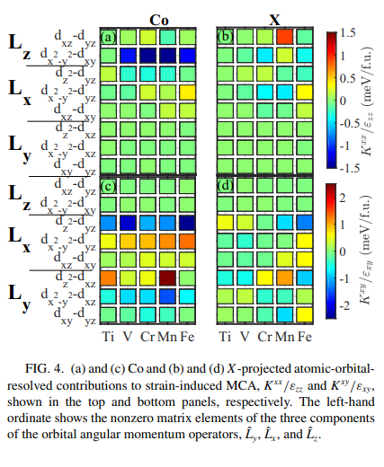
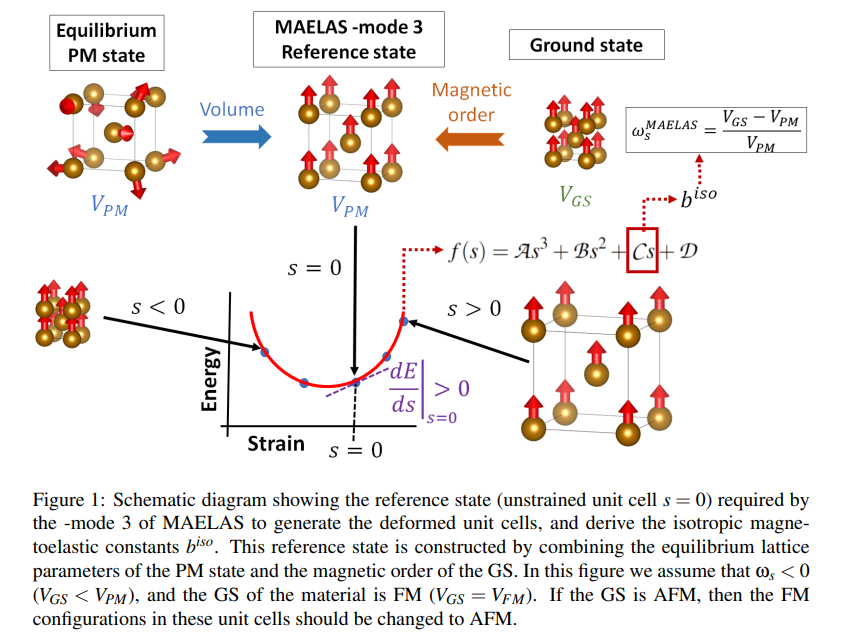
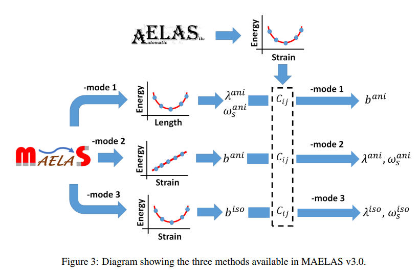
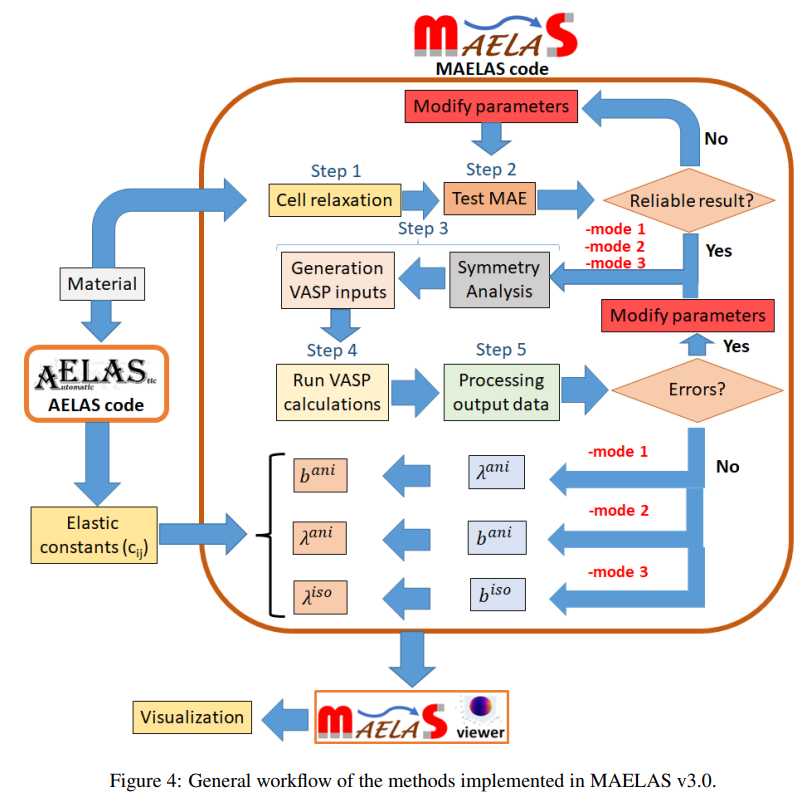

狙い
力学機能は、マテリアルの微小なスケールでの弾性挙動や強弾性、強磁性、強誘電などのマルチフェロイックを指す分野です。このスケールでの理解は、材料のマクロスケールでの性質に影響を与え、新しい種類の弾性体やコンポジット材料の設計に役立ちます。微視弾性は、素材の微小構造（例：結晶粒、繊維、空孔など）とその弾性性質との相互作用に焦点を当てます。この分野では、有限要素法（FEM）、分子動力学シミュレーション、実験的手法などが用いられることが多いです。
論文タイトル一覧
ホイスラー化合物Co2XAlの磁気弾性および磁歪特性
Dzyaloshinskii-Moriya interaction (DMI)**は、磁性材料における非対称的なスピン交換相互作用であり、スピン軌道相互作用に起因する。本研究では、Green’s function (GF)法を用いて、DMIの一般的な公式を導出した。GF法は、電子構造と磁気ダイナミクスを統一的に扱うことができる。第一原理計算を用いて、様々な結晶構造と化学組成を持つ磁性材料のDMIを計算した。計算結果は、実験値や他の理論値とよく一致した。DMIの大きさと方向が、結晶対称性や原子配置に依存することを明らかにした。また、DMIの温度依存性や磁場依存性についても議論した。本研究では、DMIがスカイルミオンや多強誘電体などのトポロジカル磁気相の形成に重要な役割を果たすことを示した。これらの相は、スピントロニクスやマルチフェロニクスの応用に有望である。
2021-03-05
First-principles calculation of the Dzyaloshinskii-Moriya interaction: A Green’s function approach
Farzad Mahfouzi, et al. (California State University, Northridge, California 91330, USA)
PHYSICAL REVIEW B 103, 094410 (2021)
First-principles calculation of the Dzyaloshinskii-Moriya interaction: A Green’s function approach
Farzad Mahfouzi, et al. (California State University, Northridge, California 91330, USA)
PHYSICAL REVIEW B 103, 094410 (2021)


【コメント】
DFTスキルミオン計算の初めての報告かな？ひずみとの関係も興味深い。
【用語】 Dzyaloshinskii-Moriya interaction (DMI)：磁性材料において、スピン軌道相互作用によって生じる非対称的なスピン交換相互作用である。DMIは、スピンの向きをねじる力として働き、スピンのカンチングやスパイラルを引き起こす。DMIは、磁性材料のトポロジカル特性に大きな影響を与える。Green’s function (GF)：線形微分方程式の解を表す関数である。GF法は、電子構造と磁気ダイナミクスを統一的に扱うことができる理論手法である。GF法は、電子相関や不均一系の効果を取り入れることができる。第一原理計算：量子力学や量子化学の基本原理に基づいて、物質の性質を計算する手法である。第一原理計算は、実験データや経験的なパラメータに依存しない。第一原理計算は、新しい材料の開発や物理現象の解明に広く用いられる。
【提案手法】 まず、**密度汎関数理論 (DFT)**を用いて、磁性材料の電子構造と磁化を求めた。DFTは、電子の密度を基本変数として、電子系のエネルギーを最小化する手法である。次に、**ランダウ・リフシッツ・ギルバート方程式 (LLG)**を用いて、磁化の時間発展を記述した。LLG方程式は、磁化のダイナミクスを表す非線形偏微分方程式である。最後に、**Green’s function (GF)**法を用いて、DMIの一般的な公式を導出した。GF法は、電子構造と磁気ダイナミクスを統一的に扱うことができる理論手法である。GF法は、電子相関や不均一系の効果を取り入れることができる。
【学術的新規性】 DMIの一般的な公式を、GF法を用いて初めて導出した。これにより、DMIの物理的な起源や結晶構造や化学組成による変化を定量的に理解することができる。DMIの温度依存性や磁場依存性について、GF法を用いて初めて議論した。これにより、DMIの制御や調整の可能性を示唆することができる。DMIがスカイルミオンや多強誘電体などのトポロジカル磁気相の形成に重要な役割を果たすことを、第一原理計算を用いて初めて示した。これにより、DMIを利用したスピントロニクスやマルチフェロニクスの応用の展望を提供することができる。
【その他】 応力は、DMIの大きさと方向に影響を与える。応力は、結晶の対称性を変化させることで、スピン軌道相互作用の強さや向きを変えるからである。応力は、スカイルミオンや多強誘電体などのトポロジカル磁気相の安定性に影響を与える。応力は、スピンのカンチングやスパイラルの周期や角度を変化させることで、トポロジカル特性を変えるからである。応力は、磁場や温度とともに、DMIの制御や調整の手段となる。応力は、外部から加えることができるし、可逆的であるからである 。
【用語】 Dzyaloshinskii-Moriya interaction (DMI)：磁性材料において、スピン軌道相互作用によって生じる非対称的なスピン交換相互作用である。DMIは、スピンの向きをねじる力として働き、スピンのカンチングやスパイラルを引き起こす。DMIは、磁性材料のトポロジカル特性に大きな影響を与える。Green’s function (GF)：線形微分方程式の解を表す関数である。GF法は、電子構造と磁気ダイナミクスを統一的に扱うことができる理論手法である。GF法は、電子相関や不均一系の効果を取り入れることができる。第一原理計算：量子力学や量子化学の基本原理に基づいて、物質の性質を計算する手法である。第一原理計算は、実験データや経験的なパラメータに依存しない。第一原理計算は、新しい材料の開発や物理現象の解明に広く用いられる。
【提案手法】 まず、**密度汎関数理論 (DFT)**を用いて、磁性材料の電子構造と磁化を求めた。DFTは、電子の密度を基本変数として、電子系のエネルギーを最小化する手法である。次に、**ランダウ・リフシッツ・ギルバート方程式 (LLG)**を用いて、磁化の時間発展を記述した。LLG方程式は、磁化のダイナミクスを表す非線形偏微分方程式である。最後に、**Green’s function (GF)**法を用いて、DMIの一般的な公式を導出した。GF法は、電子構造と磁気ダイナミクスを統一的に扱うことができる理論手法である。GF法は、電子相関や不均一系の効果を取り入れることができる。
【学術的新規性】 DMIの一般的な公式を、GF法を用いて初めて導出した。これにより、DMIの物理的な起源や結晶構造や化学組成による変化を定量的に理解することができる。DMIの温度依存性や磁場依存性について、GF法を用いて初めて議論した。これにより、DMIの制御や調整の可能性を示唆することができる。DMIがスカイルミオンや多強誘電体などのトポロジカル磁気相の形成に重要な役割を果たすことを、第一原理計算を用いて初めて示した。これにより、DMIを利用したスピントロニクスやマルチフェロニクスの応用の展望を提供することができる。
【その他】 応力は、DMIの大きさと方向に影響を与える。応力は、結晶の対称性を変化させることで、スピン軌道相互作用の強さや向きを変えるからである。応力は、スカイルミオンや多強誘電体などのトポロジカル磁気相の安定性に影響を与える。応力は、スピンのカンチングやスパイラルの周期や角度を変化させることで、トポロジカル特性を変えるからである。応力は、磁場や温度とともに、DMIの制御や調整の手段となる。応力は、外部から加えることができるし、可逆的であるからである 。
ホイスラー化合物Co2XAlの磁気弾性および磁歪特性
コバルト系ホイスラー化合物Co2XAl（X=Ti, V, Cr, Mn, Fe）の磁気弾性および磁歪特性を第一原理計算で詳細に調べた。磁気結晶異方性エネルギーを計算するために、従来の全エネルギー法に加えて、トルク法とスピン軌道トルク法という新しい方法を提案した。トルク法とスピン軌道トルク法は、計算効率が高く、磁気結晶異方性定数の原子および軌道分解が可能であることを示した。磁気結晶異方性定数の主な寄与は、コバルト原子の軌道角運動量の歪み誘起変調に由来することを明らかにした。磁歪定数は、実験値と比較して、DFT+U法がより良い一致を示すことを見出した。
2020-09-01
Magnetoelastic and magnetostrictive properties of Co2XAl Heusler compounds
Farzad Mahfouzi, et al. (California State University, Northridge, California 91330, USA)
PHYSICAL REVIEW B 102, 094401 (2020)
Magnetoelastic and magnetostrictive properties of Co2XAl Heusler compounds
Farzad Mahfouzi, et al. (California State University, Northridge, California 91330, USA)
PHYSICAL REVIEW B 102, 094401 (2020)


【コメント】
DFT磁歪計算の初めての報告かな？いい論文。
【用語】 磁気結晶異方性：磁性材料の磁気特性が結晶構造の方向によって異なる現象。スピン軌道相互作用に起因し、磁化方向を変えるために必要なエネルギーを表す。磁気結晶異方性は、磁気記憶素子や磁気センサーなどの応用に重要な役割を果たす。磁気弾性：磁化と歪みとの相互作用のこと。磁性材料の形状が磁化方向や磁場の変化によって変化する現象を磁歪と呼ぶ。逆に、歪みが磁化方向や磁場に影響を与える現象を歪み誘起磁気異方性と呼ぶ。磁気弾性は、多発性や磁気機械アクチュエータなどの応用に利用される。ホイスラー化合物：X2YZという組成を持つ三元金属間化合物の一種で、L21という立方晶構造をとるもの。XとYは遷移金属元素で、Zはpブロック元素である。ホイスラー化合物は、半金属性、高キュリー温度、巨大トンネル磁気抵抗、磁気形状記憶、超伝導性、トポロジカルウェイル粒子、異常ネルンスト効果など、多様な物性を示す。
【提案手法】 ホイスラー化合物：X2YZという組成を持つ三元金属間化合物の一種で、L21という立方晶構造をとるもの。XとYは遷移金属元素で、Zはpブロック元素である。ホイスラー化合物は、半金属性、高キュリー温度、巨大トンネル磁気抵抗、磁気形状記憶、超伝導性、トポロジカルウェイル粒子、異常ネルンスト効果など、多様な物性を示す。
【学術的新規性】 Co2XAl化合物の磁気弾性定数は、B1が負でB2が正負に分かれることがわかった。B1は歪みによる軌道角運動量の変化によって決まり、B2は歪みによる磁気結晶異方性の変化によって決まることがわかった。磁歪定数は、DFT+U法が実験値とより良く一致することがわかった。これは、U項が電子相関を考慮することで、磁気特性に影響を与えることを示している。トルク法とスピン軌道トルク法は、磁気結晶異方性定数の原子や軌道に分解できることがわかった。これにより、磁気結晶異方性の物理的な起源を明らかにすることができる。特に、コバルト原子の軌道角運動量の歪み誘起変調が、磁気結晶異方性定数の主な寄与となることがわかった。
【用語】 磁気結晶異方性：磁性材料の磁気特性が結晶構造の方向によって異なる現象。スピン軌道相互作用に起因し、磁化方向を変えるために必要なエネルギーを表す。磁気結晶異方性は、磁気記憶素子や磁気センサーなどの応用に重要な役割を果たす。磁気弾性：磁化と歪みとの相互作用のこと。磁性材料の形状が磁化方向や磁場の変化によって変化する現象を磁歪と呼ぶ。逆に、歪みが磁化方向や磁場に影響を与える現象を歪み誘起磁気異方性と呼ぶ。磁気弾性は、多発性や磁気機械アクチュエータなどの応用に利用される。ホイスラー化合物：X2YZという組成を持つ三元金属間化合物の一種で、L21という立方晶構造をとるもの。XとYは遷移金属元素で、Zはpブロック元素である。ホイスラー化合物は、半金属性、高キュリー温度、巨大トンネル磁気抵抗、磁気形状記憶、超伝導性、トポロジカルウェイル粒子、異常ネルンスト効果など、多様な物性を示す。
【提案手法】 ホイスラー化合物：X2YZという組成を持つ三元金属間化合物の一種で、L21という立方晶構造をとるもの。XとYは遷移金属元素で、Zはpブロック元素である。ホイスラー化合物は、半金属性、高キュリー温度、巨大トンネル磁気抵抗、磁気形状記憶、超伝導性、トポロジカルウェイル粒子、異常ネルンスト効果など、多様な物性を示す。
【学術的新規性】 Co2XAl化合物の磁気弾性定数は、B1が負でB2が正負に分かれることがわかった。B1は歪みによる軌道角運動量の変化によって決まり、B2は歪みによる磁気結晶異方性の変化によって決まることがわかった。磁歪定数は、DFT+U法が実験値とより良く一致することがわかった。これは、U項が電子相関を考慮することで、磁気特性に影響を与えることを示している。トルク法とスピン軌道トルク法は、磁気結晶異方性定数の原子や軌道に分解できることがわかった。これにより、磁気結晶異方性の物理的な起源を明らかにすることができる。特に、コバルト原子の軌道角運動量の歪み誘起変調が、磁気結晶異方性定数の主な寄与となることがわかった。
交換磁歪の自動計算
本研究では、単位胞の変形によって等方的な磁弾性定数、等方的な磁歪係数、および交換磁歪に関連する自発的な体積磁歪を計算する方法を提案している。この方法は、pythonパッケージMAELAS（v3.0）に実装されており、第一原理計算や古典的なスピン格子モデルを用いて、これらの量を自動的に求めることができる。また、自発的な体積磁歪を得るために必要な基準状態についても議論しており、パラ磁性状態の平衡体積と基底状態の磁気秩序を組み合わせたものであることを示している。さらに、一軸性結晶における等方的な磁歪係数λ α1,0 の理論式に誤りがあることを指摘し、修正している。この計算ツールは、交換相互作用と磁弾性との関係をより良く理解し、特性評価するのに役立つと期待される。特に、交換相互作用と磁弾性との関係をより良く理解し、特性評価するのに役立つ計算ツールを開発した。等方的な磁弾性定数や自発的な体積磁歪は、インバー合金などの温度膨張係数やレーザー誘起超高速磁化などの新奇な現象に重要な役割を果たす物理量である。第一原理計算や古典的なスピン格子モデルと連携して、高い精度と安定性でこれらの量を自動的に求めることができる。
2023-04-12
Automated calculations of exchange magnetostriction
P. Nieves, et al. (Technical University of Ostrava, Czech Republic)
Computational Materials Science 224(1):112158 (2023)
Automated calculations of exchange magnetostriction
P. Nieves, et al. (Technical University of Ostrava, Czech Republic)
Computational Materials Science 224(1):112158 (2023)



【コメント】
電子的な相転移や構造的な相転移を評価するのに歪み印加は有効のようだ。
【用語】 等方的な磁弾性定数（b iso）：ひずみに依存するが、飽和状態での磁化方向には依存しない磁弾性エネルギーの寄与を与える定数である。主に原子磁気モーメントと交換相互作用の体積依存性に起因する。等方的な磁歪係数（λ iso）：ひずみと等方的な磁弾性定数から導かれる量である。これらの量は、長さの自発的な変化率（[l −l0]/l0）を特徴付ける。ここで、l0とlはそれぞれパラ磁性状態と飽和状態での材料の長さである。自発的な体積磁歪（ωs）：パラ磁性状態と飽和状態での体積変化率（ωs = [VFM −VPM]/VPM）で定義される物理量である。この物理量は、例えばインバー合金（Fe65Ni35）のように、通常の熱膨張を打ち消す非常に大きなωs (∼ 10−2 )を持つ材料において、温度膨張係数に異常を引き起こす。MAELAS：第一原理計算や古典的なスピン格子モデルと連携して、磁弾性定数や磁歪係数を自動的に計算することができるpythonパッケージである。このパッケージは、単位胞の変形に基づくエネルギー-ひずみ法を用いており、高い精度と安定性を持つ。
【提案手法】 まず、基準状態として、パラ磁性状態の平衡体積と基底状態の磁気秩序を組み合わせた単位胞を用意する。この単位胞の原子位置は、一定の体積での平衡位置に緩和させる。次に、MAELASを用いて、基準状態から変形した単位胞を生成する。変形した単位胞は、等方的な磁弾性定数b iso i を求めるために必要なひずみテンソルεi (s)に対応する。ここで、sはひずみをパラメータ化する変数である。次に、第一原理計算や古典的なスピン格子モデルを用いて、変形した単位胞のエネルギーを計算する。このとき、基底状態と同じ磁気秩序（強磁性または反強磁性）を用いる。次に、MAELASを用いて、エネルギーとひずみのデータに対して3次多項式（Eq.3）をフィッティングする。このフィッティングから、等方的な磁弾性定数b iso i は式（4）で与えられる。最後に、弾性定数も計算されていれば、MAELASは等方的な磁歪係数（λ iso）と自発的な体積磁歪（ωs）も計算する。これらの量は、付録Aに示す理論式（λ iso(b iso k ,Ci j)とωs(λ iso)）から求められる。
【学術的新規性】 交換磁歪に関連する等方的な磁弾性定数、磁歪係数、自発的な体積磁歪を単位胞の変形に基づいて計算する方法を提案し、pythonパッケージMAELASに実装した。また、自発的な体積磁歪を得るために必要な基準状態を明確にし、パラ磁性状態の平衡体積と基底状態の磁気秩序を組み合わせたものであることを示した。更に、一軸性結晶における等方的な磁歪係数の理論式に誤りがあることを指摘し、修正した。
【用語】 等方的な磁弾性定数（b iso）：ひずみに依存するが、飽和状態での磁化方向には依存しない磁弾性エネルギーの寄与を与える定数である。主に原子磁気モーメントと交換相互作用の体積依存性に起因する。等方的な磁歪係数（λ iso）：ひずみと等方的な磁弾性定数から導かれる量である。これらの量は、長さの自発的な変化率（[l −l0]/l0）を特徴付ける。ここで、l0とlはそれぞれパラ磁性状態と飽和状態での材料の長さである。自発的な体積磁歪（ωs）：パラ磁性状態と飽和状態での体積変化率（ωs = [VFM −VPM]/VPM）で定義される物理量である。この物理量は、例えばインバー合金（Fe65Ni35）のように、通常の熱膨張を打ち消す非常に大きなωs (∼ 10−2 )を持つ材料において、温度膨張係数に異常を引き起こす。MAELAS：第一原理計算や古典的なスピン格子モデルと連携して、磁弾性定数や磁歪係数を自動的に計算することができるpythonパッケージである。このパッケージは、単位胞の変形に基づくエネルギー-ひずみ法を用いており、高い精度と安定性を持つ。
【提案手法】 まず、基準状態として、パラ磁性状態の平衡体積と基底状態の磁気秩序を組み合わせた単位胞を用意する。この単位胞の原子位置は、一定の体積での平衡位置に緩和させる。次に、MAELASを用いて、基準状態から変形した単位胞を生成する。変形した単位胞は、等方的な磁弾性定数b iso i を求めるために必要なひずみテンソルεi (s)に対応する。ここで、sはひずみをパラメータ化する変数である。次に、第一原理計算や古典的なスピン格子モデルを用いて、変形した単位胞のエネルギーを計算する。このとき、基底状態と同じ磁気秩序（強磁性または反強磁性）を用いる。次に、MAELASを用いて、エネルギーとひずみのデータに対して3次多項式（Eq.3）をフィッティングする。このフィッティングから、等方的な磁弾性定数b iso i は式（4）で与えられる。最後に、弾性定数も計算されていれば、MAELASは等方的な磁歪係数（λ iso）と自発的な体積磁歪（ωs）も計算する。これらの量は、付録Aに示す理論式（λ iso(b iso k ,Ci j)とωs(λ iso)）から求められる。
【学術的新規性】 交換磁歪に関連する等方的な磁弾性定数、磁歪係数、自発的な体積磁歪を単位胞の変形に基づいて計算する方法を提案し、pythonパッケージMAELASに実装した。また、自発的な体積磁歪を得るために必要な基準状態を明確にし、パラ磁性状態の平衡体積と基底状態の磁気秩序を組み合わせたものであることを示した。更に、一軸性結晶における等方的な磁歪係数の理論式に誤りがあることを指摘し、修正した。
二重ペロブスカイトの構造相転移と磁気弾性結合
高圧XRD測定：Nd2CoFeO6 (NCFO)は、高圧下で正方晶から単斜晶への構造相転移を約13.8 GPaで起こすことがXRD測定によって明らかになった。相転移は、(Fe/Co)O6八面体の歪みが圧力によって増加し、格子ひずみを緩和するために起こる。また、約1.1 GPaで体積圧縮率と体積弾性率に異常が見られたが、これは電子的な異常によるものと考えられる。低温ラマン分析：NCFOのラマンスペクトルは、温度が低下すると青方偏移するが、約47 Kで急激に赤方偏移することが低温ラマン分析によって示された。この赤方偏移は、スピン再配向転移に関連していると考えられる。また、約240 Kでラマンモード周波数に突然の飛びが見られたが、これは反強磁性転移温度TNと一致する。高圧ラマン分析：高圧下でのラマンスペクトルは、約27.4 GPaまで大きな変化は見られなかった。しかし、AgとBgモードのピーク位置は、約1 GPaと約13.1 GPaで傾きの変化を示した。13.1 GPa以上では、正方晶から単斜晶への構造相転移に関連して傾きが減少した。1 GPa以下では、圧力に対する傾きが半分以下に減少したが、これは新しいスピン配列によるものと推測される。磁場下での高圧ラマン分析：外部磁場を印加すると、Bgモードは圧力に伴って硬化した。この硬化は、スピンと磁場との強い相互作用によってスピンフォノン相互作用が影響を受けるためだと考えられる。また、磁場を切った後もラマンスペクトルは元の振る舞いに戻らなかった。この現象は詳細な理論的研究が必要である。
Published 2023-08-18
Pressure-induced softening in bulk modulus due to magneto-elastic coupling in Nd2CoFeO6 double Perovskite
Bidisha Mukherjee et al. (Indian Institute of Science Education and Research Kolkata, India)
arXiv:2308.09651 (cond-mat)
Pressure-induced softening in bulk modulus due to magneto-elastic coupling in Nd2CoFeO6 double Perovskite
Bidisha Mukherjee et al. (Indian Institute of Science Education and Research Kolkata, India)
arXiv:2308.09651 (cond-mat)


コメント：電子的な相転移や構造的な相転移を評価するのに歪み印加は有効のようだ。